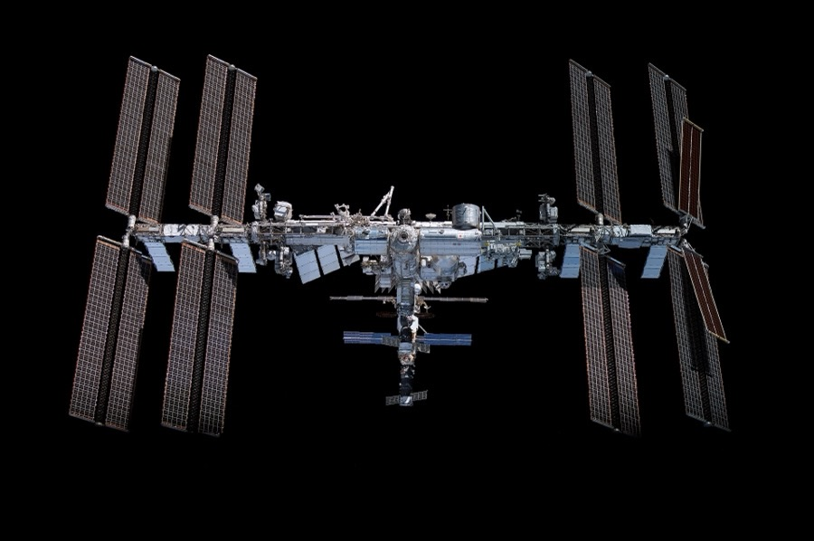

Crewed-station design — Salyut to ISS to Tiangong
Six decades of crewed stations, six generations of architecture — the answer to 'how do you keep humans alive in orbit for months' got refined every time the previous answer broke.
A space station is four problems stacked: a pressurised hull strong enough to hold 1 atm against vacuum, a docking system that lets crew + cargo arrive, a life-support stack that recycles air/water/heat, and crew quarters that don't drive the occupants to mutiny. Every station ever flown made a different trade-off on those four. Salyut 1 (Soviet, 1971) was essentially a tin can with a docking port and one airlock; its first long-duration crew (Soyuz 11, 1971) died on the return because the IVA suit problem hadn't been solved yet. Skylab (US, 1973) was a converted Saturn V third stage — enormous interior volume (~360 m³) and one shot at it; the micrometeoroid shield tore off on launch and the first crew had to deploy a parasol from outside to keep the workshop from cooking. Each station's first crew is the one that finds the design flaws.
Modular construction was the breakthrough that made permanent crewing possible. Mir (Soviet→Russian, 1986–2001) was the first multi-module station: a Salyut-derived core plus six attached modules added over a decade. The architecture proved you could keep humans aboard *continuously*, swap crews, and grow the station while it was occupied. Mir also taught everyone what happens when the docking architecture breaks: the 1997 Progress collision punctured Spektr, and the crew sealed it off rather than abandon ship. That lesson — every module has to be isolatable — is wired into every station since.
The ISS (1998–) inherited Mir's modular logic and scaled it: 16 pressurised elements built by NASA, Roscosmos, ESA, JAXA, and CSA, joined through a small number of standardised docking ports (CBM for berthing, IDSS for autonomous dock). The American segment (Unity, Destiny, Tranquility, Harmony, Columbus, Kibo, etc.) is hung off the truss with utilities running through Harmony; the Russian segment (Zarya, Zvezda, Nauka, Poisk, Rassvet, Prichal) operates on its own ECLSS and power loop and can theoretically survive segment isolation. The redundancy is doubled because the two halves were never quite trusted to fail together. The cost was complexity — ISS assembly took 13 years, 30+ assembly flights, and over 160 spacewalks.
Tiangong (CMSA, 2021–) is the deliberate counter-design: smaller (3 modules vs ISS's 16), tighter (single-agency, single supplier, single docking standard), and faster to build (core + two labs in under 24 months). The architecture borrows Salyut/Mir's core+module idea but lands closer to Skylab in scope — large interior volumes, fewer joints, less assembly EVA. The trade-off is no international redundancy: a problem in Tianhe's ECLSS isn't backed by a separate segment, and Wentian's airlock is the only EVA path. Tiangong's lessons will inform whoever builds the next station, which is now plausibly Axiom Station (commercial, attaches to ISS first then detaches) or a Chinese Mars-bound design — both are pencilled in for the 2030s.
What's invariant across all of them: every crewed station ever flown has had bigger problems with water, fire, and crew dynamics than with vacuum or radiation. Salyut 7 (1985) was almost lost when its onboard systems failed and Leonov + Savinykh had to dock manually with a dead station and reboot it in the cold. Mir had a fire (1997) bad enough that the crew put on respirators. ISS Expedition 1 had its toilet break in week one. The hull engineering is the part that's been solved since Salyut; the human-system engineering keeps revealing new ways to go wrong, which is what makes the encyclopedia's Life-in-Space section a moving target.

SEE IN THE APP
- /iss Module catalogue — 16 pressurised + assembly elements across US / Russian / European / Japanese contributions
- /tiangong Tianhe core + Wentian + Mengtian — the second continuously crewed station, with a deliberately tighter architecture
- /missions Crewed expeditions to Salyut 1–7, Skylab, Mir, ISS, and Tiangong appear in the missions catalogue